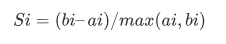

Clustering¶
Clustering adalah jenis pembelajaran tanpa pengawasan . Ini sangat sering digunakan ketika Anda tidak memiliki label data. K-Means Clustering adalah salah satu algoritma pengelompokan populer. Tujuan dari algoritma ini adalah untuk menemukan grup (cluster) dalam data yang diberikan.
K-Means¶
K-Means Clustering adalah suatu metode penganalisaan data atau metode Data Mining yang melakukan proses pemodelan tanpa supervisi (unsupervised) dan merupakan salah satu metode yang melakukan pengelompokan data dengan sistem partisi.
Metode K-Means Clustering berusaha mengelompokkan data yang ada ke dalam beberapa kelompok, dimana data dalam satu kelompok mempunyai karakteristik yang sama satu sama lainnya dan mempunyai karakteristik yang berbeda dengan data yang ada di dalam kelompok yang lain.
Data clustering menggunakan metode K-Means Clustering ini secara umum dilakukan dengan algoritma dasar sebagai berikut:
- Tentukan jumlah cluster
- Alokasikan data ke dalam cluster secara random
- Hitung centroid/rata-rata dari data yang ada di masing-masing cluster
- Alokasikan masing-masing data ke centroid/rata-rata terdekat
- Kembali ke Step 3, apabila masih ada data yang berpindah cluster atau apabila perubahan nilai centroid, ada yang di atas nilai threshold yang ditentukan atau apabila perubahan nilai pada objective function yang digunakan di atas nilai threshold yang ditentukan
Library yang digunakan yaitu scikit-learn,seperti dibawah ini
from sklearn.cluster import KMeans
kmeans = KMeans(n_clusters=5, random_state=0).fit(fiturBaru)
write_csv("Kluster_label.csv", [kmeans.labels_])
s_avg = silhouette_score(tfidf_matrix, kmeans.labels_, random_state=10)
print(s_avg)
for i in range(len(kmeans.labels_)):
print("Doc %d =>> cluster %d" %(i+1, kmeans.labels_[i]))Disini kita membagi cluster sebanyak 5 bagian. Jumlah cluster dapat diubah sesuai kebutuhan. Cara membaginya:
kmeans = KMeans(n_clusters=5, random_state=0).fit(fiturBaru)Silhouette Coeffisien¶
Silhouette Coefficient merupakan metode ini berfungsi untuk menguji kualitas dari cluster yang dihasilkan. Metode ini merupakan metode validasi cluster yang menggabungkan metode cohesion dan Separation. Untuk menghitung nilai silhoutte coefisient diperlukan jarak antar dokumen dengan menggunakan rumus EuclideanDistance. Setelah itu tahapan untuk menghitung nilai silhoutte coeffisien adalah sebagai berikut :
-
Untuk setiap objek i, hitung rata-rata jarak dari objek i dengan seluruh objek yang berada dalam satu cluster. Akan didapatkan nilai rata-rata yang disebut ai.
-
Untuk setiap objek i, hitung rata-rata jarak dari objek i dengan objek yang berada di cluster lainnya. Dari semua jarak rata-rata tersebut ambil nilai yang paling kecil. Nilai ini disebut bi.
-
Setelah itu maka untuk objek i memiliki nilai silhoutte coefisien :

Dibawah ini merupakan code yang digunakan untuk menghitung jarak rata-rata antara cluster dan titik dan juga menghitung jarak terdekat cluster
s_avg = silhouette_score(tfidf_matrix, kmeans.labels_, random_state=10)
print(s_avg)